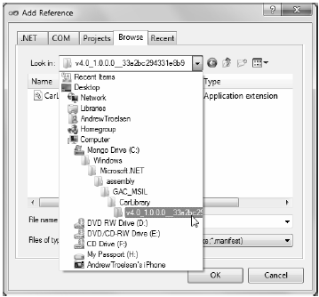

When you are building applications that use a shared assembly, the only difference from consuming a private assembly is in how you reference the library using Visual Studio 2010. In reality, there is no difference as far as the tool is concerned—you still use the Add Reference dialog box. However, this dialog box will not allow you to reference the assembly by browsing to the C:\Windows\assembly folder, which is specific to .NET 3.5 and earlier.
Note Seasoned .NET developers may recall that even when you navigated to C:\Windows\assembly, the Visual Studio Add Reference dialog refused to let you reference shared libraries! Because of this, developers had to maintain a separate copy of the library, simply for the purpose of referencing the assembly. The story under Visual Studio 2010 is much nicer. Read on...
When you need to reference an assembly that has been deployed to the .NET 4.0 GAC, you will need to browse to the "v4.0_major.minor.build.revision__publicKeyTokenValue" directory for your particular library via the Browse tab (see Figure 14-23).
Figure 14-23 Referencing the strongly named, shared CarLibrary (version 1.0.0.0) using Visual Studio 2010
This (somewhat confusing) fact aside, create a new C# Console Application named SharedCarLibClient and reference your CarLibrary.dll assembly as just described. As you would hope, you can now see an icon in your Solution Explorer’s Reference folder. If you select this icon and then view the Properties window (accessible from the Visual Studio View menu), you’ll notice that the Copy Local property of the selected CarLibrary is now set to False. In any case, author the following test code in your new client application:
using System; using System.Collections.Generic; using System.Linq; using System.Text; using CarLibrary; namespace SharedCarLibClient { class Program { static void Main(string[] args) { Console.WriteLine("***** Shared Assembly Client *****"); SportsCar c = new SportsCar(); c.TurboBoost(); Console.ReadLine(); } } }
Once you have compiled your client application, navigate to the directory that contains SharedCarLibClient.exe using Windows Explorer and notice that Visual Studio 2010 has not copied CarLibrary.dll to the client’s application directory. When you reference an assembly whose manifest contains a .publickey value, Visual Studio 2010 assumes the strongly named assembly will most likely be deployed to the GAC, and therefore does not bother to copy the binary.
Recall that when you generate a strong name for an assembly, the entire public key is recorded in the assembly manifest. On a related note, when a client references a strongly named assembly, its manifest records a condensed hash value of the full public key, denoted by the .publickeytoken tag. If you open the manifest of SharedCarLibClient.exe using ildasm.exe, you would find the following (your public key token value will of course differ, as it is computed based on the public key value):
.assembly extern CarLibrary
{
.publickeytoken = (33 A2 BC 29 43 31 E8 B9 )
.ver 1:0:0:0
}
If you compare the value of the public key token recorded in the client manifest with the public key token value shown in the GAC, you will find a dead-on match. Recall that a public key represents one aspect of the strongly named assembly’s identity. Given this, the CLR will only load version 1.0.0.0 of an assembly named CarLibrary that has a public key that can be hashed down to the value 33A2BC294331E8B9. If the CLR does not find an assembly meeting this description in the GAC (and did not find a private assembly named CarLibrary in the client’s directory), a FileNotFoundException exception is thrown.
Source Code The SharedCarLibClient application can be found under the Chapter 14 subdirectory.